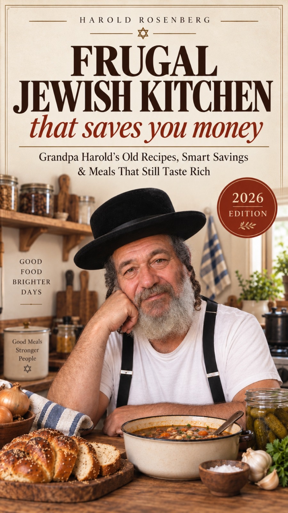

Harold Rosenberg · Frugal Jewish Kitchen
Good food should not make you nervous about the bill.
75 Ashkenazi family recipes (soups, kugels, brisket, blintzes, Shabbat for less), each with an honest cost line and a plan for tomorrow's leftovers. One pot of Harold's chicken soup pays for the book.
- Instant PDF download
- Secure checkout
- 24-hour money-back guarantee

brown the onion properly!
01 The math
A book. A $50 soup saving.
Every recipe opens with three lines: cost at home, cost bought prepared, and the difference. A few straight from the pages (U.S. planning ranges; your store will vary):
Your kitchen
How many suppers a week would you cook instead of ordering in?
A rough guide from the middle of each supper recipe's range in the book.
Start saving ·02 What's inside
15 chapters. 75 recipes. 350 pages.
Tonight's chicken becomes tomorrow's soup. Every dish is labeled MEAT, DAIRY, PAREVE or FISH, with U.S. and metric measures.
- A cost line on every recipe
- Step-by-step "look for" cues and fixes for what usually goes wrong
- Shabbat on a budget and holidays without overspending
- A two-week meal plan and a frugal pantry shopping list
03 About the cook
Harold Rosenberg. A lifetime at the family stove.
Harold never went to cooking school. He learned standing next to his mother and grandmother on Friday afternoons, from recipe cards with half the measurements missing, and from many years of his own mistakes, which he's happy to tell you about so you don't make them.
"Frugality is not a purity test. It is the long habit of noticing what you already have, using it well, and spending with intention."Watch Harold on YouTube
04 Get the book
Frugal Jewish Kitchen That Saves You Money
- 75 recipes across 15 chapters, 350 pages
- What each dish costs at home vs. bought prepared
- A whole chapter on turning leftovers into supper
- Reads on phone, tablet or computer, or print it for the stove
Don't love it? Covered by our 24-hour money-back guarantee.
05 Questions
Before you set the table.
Do I need to be an experienced cook?
No. Chapter one covers five foundations (stock from bones, slow-browned onions, a breadcrumb jar, cook-once beans and schmaltz), and everything after builds on those.
Is this a kosher cookbook?
Every recipe is labeled MEAT, DAIRY, PAREVE or FISH to help you plan, but those labels are not rabbinic certification. If you keep kosher, check ingredients and preparation against the standards you follow.
How do I get it?
Right after checkout you're taken to a download page for the 350-page PDF. It opens on any phone, tablet or computer, and prints cleanly on ordinary paper.
Are the dollar figures guaranteed savings?
No. They're U.S. planning ranges, not quotes from a particular store. Prices change with location and season. Metric conversions and Celsius temperatures are included.